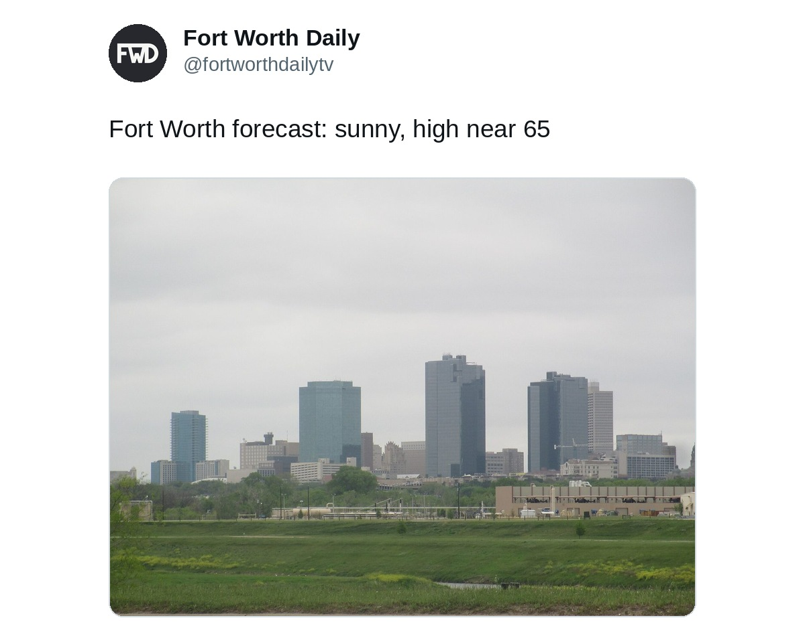
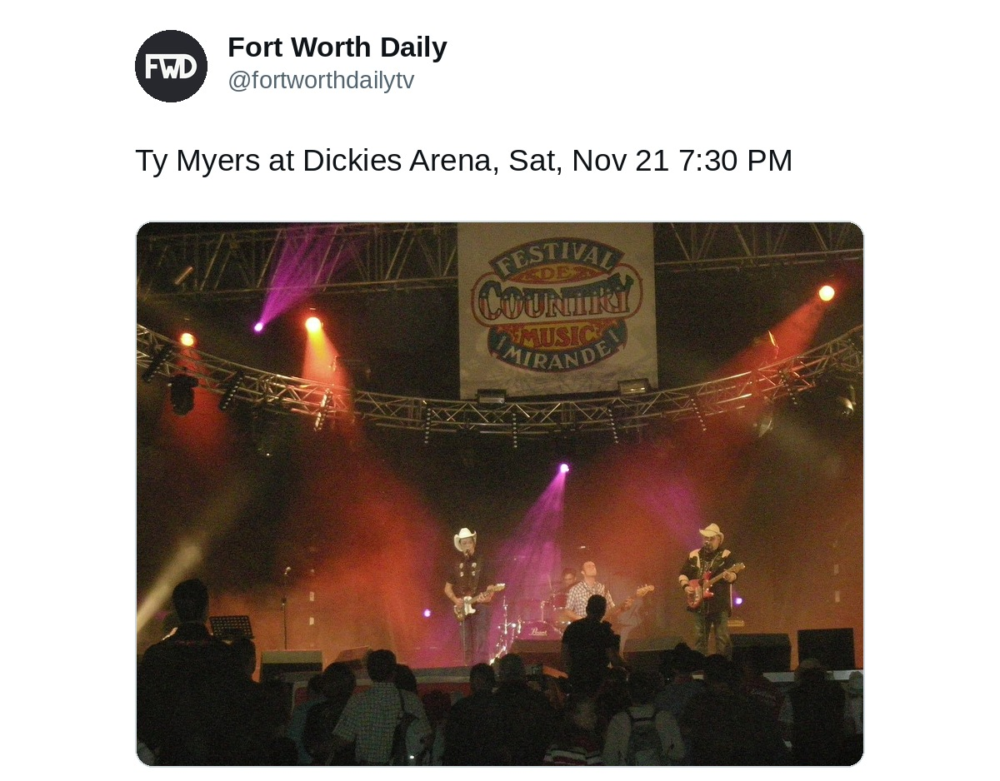
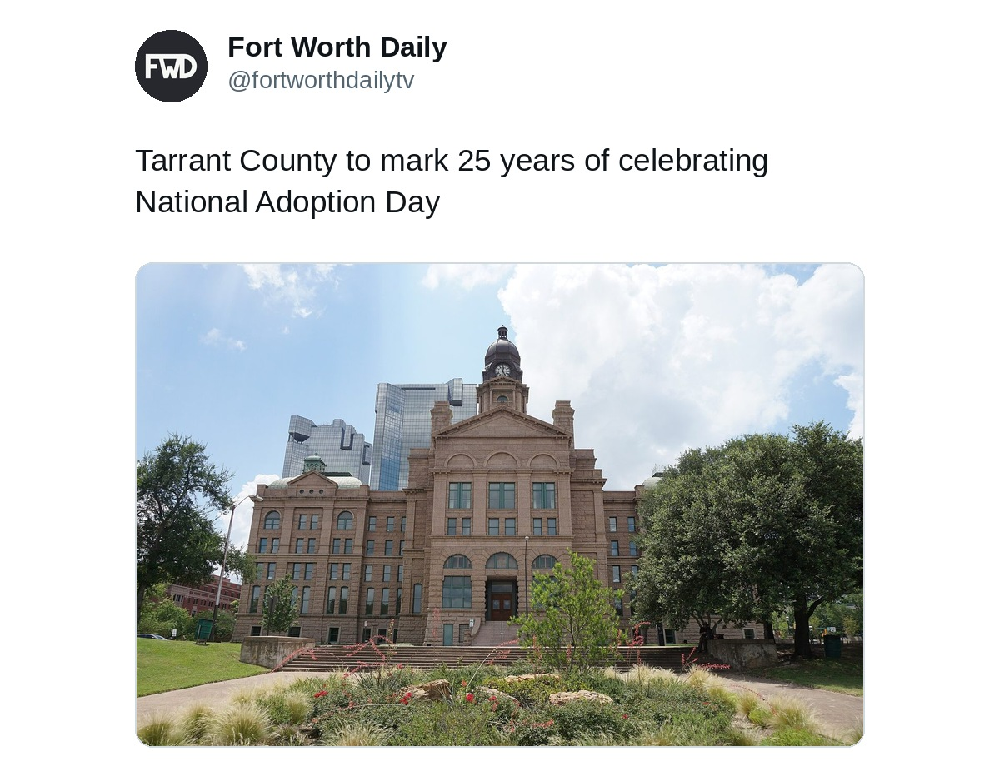

Fort Worth Daily — run 20261118-221637
491 candidates · 14 post(s) · publisher: dryrun
Sunny and a high of 65 in Fort Worth today.

👍 ❤️ 😮 ✅ written to disk (dry run)
story + scoring
{
"source": "FOX Weather",
"kind": "nws_forecast",
"score": 1.95,
"relevance": 2,
"url": "https://www.foxweather.com/local-weather/texas/fort-worth",
"image_license": "wikimedia-cc",
"image_credit": "Photo: No machine-readable author provided. Billy Hathorn assumed (based on copyright c via Wikimedia Commons (CC BY-SA 3.0)"
}Women's Funkytown Showdown at Dickies Arena this Sunday. Tickets in the comments
👍 ❤️ 😮 ✅ written to disk (dry run)
story + scoring
{
"source": "Ticketmaster",
"kind": "event",
"score": 1.6209,
"relevance": 5,
"url": "https://www.ticketmaster.com/dickies-arena-tickets-fort-worth/venue/99330",
"image_license": "openverse-cc",
"image_credit": "Photo: sludgegulper (CC BY-SA 2.0) via Flickr"
}Ty Myers at Dickies Arena this Saturday. Tickets in the comments

👍 ❤️ 😮 ✅ written to disk (dry run)
story + scoring
{
"source": "Ticketmaster",
"kind": "event",
"score": 1.4369,
"relevance": 2,
"url": "https://www.ticketmaster.com/dickies-arena-tickets-fort-worth/venue/99330",
"image_license": "openverse-cc",
"image_credit": "Photo: Jamiecat * (CC BY 2.0) via Flickr"
}Booksellers said the demand for physical bookstores remains strong, while the retailer plans more openings in Texas. Barnes & Noble held a ribbon-cutting ceremony Wednesday for a new bookstore at Montgomery Plaza on Carroll Street in the West 7th District.
Store manager Rebecca Ruiz said the 19,500-square-foot store, one of five planned openings in Texas this year, exceeds the others in size and includes a Starbucks cafe with an ample dining section.
👍 ❤️ 😮 ✅ written to disk (dry run)
story + scoring
{
"source": "Fort Worth Report",
"kind": "rss",
"score": 1.0919,
"relevance": 4,
"url": "https://fortworthreport.org/2026/11/18/barnes-noble-returns-to-central-fort-worth-opening-in-west-7th-district/",
"image_license": "wikimedia-cc",
"image_credit": "Photo: Michael Barera via Wikimedia Commons (CC BY-SA 4.0)"
}North Texas officer placed on leave following Flock audit, police say. Carrollton police say the audit follows citizen concerns that were brought up during city council meetings.
👍 ❤️ 😮 ✅ written to disk (dry run)
story + scoring
{
"source": "WFAA",
"kind": "rss",
"score": 0.9539,
"relevance": 2,
"url": "https://www.wfaa.com/article/news/local/dallas-county/north-texas-officer-placed-on-leave-following-flock-audit-police-say/287-e833ae64-7236-42cf-abdd-dd934d3d10f3",
"image_license": "wikimedia-cc",
"image_credit": "Photo: Michael Barera via Wikimedia Commons (CC BY-SA 4.0)"
}Largest enrollment drop in Texas’ recorded history means challenges for public schools, Morath says. Texas lost about 135,000 students from last school year, outpacing pandemic-era declines, education commissioner Mike Morath said.
👍 ❤️ 😮 ✅ written to disk (dry run)
story + scoring
{
"source": "KXAN Austin",
"kind": "rss",
"score": 0.545,
"relevance": 2,
"url": "https://www.kxan.com/news/texas/declining-enrollment-texas/",
"image_license": "wikimedia-cc",
"image_credit": "Photo: Michael Barera via Wikimedia Commons (CC BY-SA 4.0)"
}Voters will likely decide Dallas City Hall’s future in May election. Organizers with the Save Dallas City Hall Coalition submitted roughly 35,000 petition signatures to the city, aiming to let voters decide the historic building's fate in a May election.
👍 ❤️ 😮 ✅ written to disk (dry run)
story + scoring
{
"source": "FOX 4 Dallas-Fort Worth",
"kind": "rss",
"score": 0.4981,
"relevance": 2,
"url": "https://www.fox4news.com/news/voters-will-likely-decide-dallas-city-halls-future-may-election",
"image_license": "wikimedia-cc",
"image_credit": "Photo: DerekAyala27 via Wikimedia Commons (CC BY 4.0)"
}Hunger Games prequel Sunrise on the Reaping gets trapped in nostalgia
👍 ❤️ 😮 ✅ written to disk (dry run)
story + scoring
{
"source": "CultureMap Fort Worth",
"kind": "rss",
"score": 0.4359,
"relevance": 0,
"url": "https://fortworth.culturemap.com/news/entertainment/hunger-games-sunrise-reaping-review/",
"image_license": "openverse-cc",
"image_credit": "Photo: dph1110 (CC BY 2.0) via Flickr"
}A rare World War II-era penny is valued at $235,000. A Houston coin expert explains what makes it so valuable and how to check your own spare change.
👍 ❤️ 😮 ✅ written to disk (dry run)
story + scoring
{
"source": "KHOU 11 Houston",
"kind": "rss",
"score": 0.286,
"relevance": 2,
"url": "https://www.khou.com/article/news/local/rare-expensive-penny-houston-texas/285-9e4f895f-4f6e-4f38-9b4f-a4321be63696",
"image_license": "wikimedia-cc",
"image_credit": "Photo: DerekAyala27 via Wikimedia Commons (CC BY 4.0)"
}Bucán Rodeo creates dishes that are comforting yet novel. Bucán Rodeo introduces mesquite-smoked meat into pernil, arroz con pollo, and ropa vieja, creating dishes that are comforting yet novel.
By Daniel Vaughn Daniel Vaughn Daniel Vaughn is the country’s first barbecue editor, and he has eaten more barbecue than you have. A tray with sliced brisket, mofongo, pernil, ropa vieja, and more from Bucán Rodeo, in San Antonio.
👍 ❤️ 😮 ✅ written to disk (dry run)
story + scoring
{
"source": "Texas Monthly",
"kind": "rss",
"score": 0.0981,
"relevance": 2,
"url": "https://www.texasmonthly.com/bbq/bucan-rodeo-san-antonio/",
"image_license": "openverse-cc",
"image_credit": "Photo: heatheronhertravels (CC BY 2.0) via Flickr"
}The county joins 400-plus U.S. communities in helping to raise awareness of over 100,000 children waiting to be adopted from foster care. By her best estimates, LaTonya Green has parented about 75 children.
The 59-year-old southwest Arlington hairstylist has known since she was a teenage mother that she wanted to spend her life helping children. In the decades since, most of them came to her home for a period of months or years and then moved on to other phases of their lives.

👍 ❤️ 😮 ✅ written to disk (dry run)
story + scoring
{
"source": "Fort Worth Report",
"kind": "rss",
"score": 0.9522,
"relevance": 2,
"url": "https://fortworthreport.org/2026/11/18/tarrant-county-to-mark-25-years-of-celebrating-national-adoption-day/",
"image_license": "wikimedia-cc",
"image_credit": "Photo: Michael Barera via Wikimedia Commons (CC BY-SA 4.0)"
}Fort Worth police are looking for Joshua Rodriguez, wanted for aggravated robbery. Crime Stoppers is offering up to $2,000 for information leading to an arrest.
Call 817-469-TIPS (8477) or submit a tip at 469tips.com. You stay anonymous.
👍 ❤️ 😮 ✅ written to disk (dry run)
story + scoring
{
"source": "Fort Worth Police Department",
"kind": "wanted",
"score": 0.9295,
"relevance": 1,
"url": "https://police.fortworthtexas.gov/Crime-Public-Info/most-wanted",
"image_license": "official",
"image_credit": "Photo: Fort Worth Police Department"
}Trinity Metro’s board of directors approved cuts to the agency’s On-Demand program that eliminate some areas from service. Paul David Williams wonders how he will get home with his groceries.
👍 ❤️ 😮 ✅ written to disk (dry run)
story + scoring
{
"source": "Fort Worth Report",
"kind": "rss",
"score": 0.7814,
"relevance": 2,
"url": "https://fortworthreport.org/2026/11/18/this-will-affect-me-greatly-transit-users-question-rideshare-cuts-across-fort-worth/",
"image_license": "wikimedia-cc",
"image_credit": "Photo: Dbergere via Wikimedia Commons (CC BY-SA 4.0)"
}Two Guys Walk Into A Bar's upcoming single, “Accidentally Legal,” is set to release Dec. 5. Few things are more Texas than a good contradiction.
The Lone Star State can be fiercely protective of its traditions while making room for a few new, unexpected exceptions. Sometimes, the best way to make sense of it all is to write a song.
👍 ❤️ 😮 ✅ written to disk (dry run)
story + scoring
{
"source": "Fort Worth Report",
"kind": "rss",
"score": 0.6961,
"relevance": 2,
"url": "https://fortworthreport.org/2026/11/18/fort-worth-band-takes-on-taboo-subject-for-new-single/",
"image_license": "openverse-cc",
"image_credit": "Photo: Alex Butterfield (CC BY 2.0) via Flickr"
}Skipped by the writer
- Texas DPS: Trooper hospitalized after Atascosa County crash; severity of injuries unclear — DFW/Texas share used (per run or per day)
- North Texas election leaves city council in legal quagmire after recalled mayor, city coun — DFW/Texas share used (per run or per day)
Filtered out (336)
- USPS semi-truck ends up partially over I-35W railing in Fort Worth due to wet weather (FOX 4 Dallas-Fort Worth: older than 30h)
- 2 minors killed, 3 others seriously injured after van crashes and catches fire in Fort Wor (NBC 5 DFW: older than 30h)
- UT Southwestern a step closer to opening of Radiation Oncology center (Fort Worth Report: older than 30h)
- Where to eat in Fort Worth: 5 tasty new restaurants to try (CultureMap Fort Worth: older than 30h)
- A first look at Beverly's Downtown, Fort Worth's new underground Mexican restaurant (PaperCity Fort Worth: older than 30h)
- Horned Frogs get back on winning track with 20-10 win over Kansas State (ABC News (AP): older than 30h)
- Clear skies, chilly temps and the Leonid meteor shower peaks tonight over North Texas (FOX 4 Dallas-Fort Worth: older than 30h)
- Sen. John Cornyn blocks Trump nominee for federal judge in Texas (The Texas Tribune: blocklist: trump)
- Gov.-elect Gina Hinojosa says she talked border with Trump, will roll back Abbott executiv (The Texas Tribune: blocklist: trump)
- Ken Paxton’s office ends lawsuit seeking to ban Muslim civil rights group in Texas (The Texas Tribune: older than 30h)
- Ken Paxton’s office drops lawsuit accusing NCAA of deceptive marketing of women’s sports (The Texas Tribune: older than 30h)
- A $3 billion dementia fund languishes a year after Texas voters approved it (The Texas Tribune: older than 30h)
- Texas cities and counties forgo $1 billion in taxes to data centers in exchange for few jo (The Texas Tribune: older than 30h)
- Republicans spent years remaking Texas courts in their image. Voters unraveled it in one e (The Texas Tribune: older than 30h)
- Shift in Texas leadership offers hope that delayed Austin light rail will gain momentum (The Texas Tribune: older than 30h)
- Texas’ next schools chief is poised to be an educator. Teachers, parents say it’s past due (The Texas Tribune: older than 30h)
- Meet the cancer survivor, immigrant and “Lord of the Pigs” who is Texas’ next land commiss (The Texas Tribune: older than 30h)
- Texas maternal death rate drops to pre-pandemic levels as mental health becomes the leadin (The Texas Tribune: older than 30h)
- GOP candidate seeks to block Dem’s win amid eligibility question (The Texas Tribune: older than 30h)
- SpaceX confirms it’s eyeing public parkland, but says it won’t buy Boca Chica Beach (The Texas Tribune: older than 30h)
- And God Said, ‘Let There Be Reality Dating Shows.’ And There Was ‘The Vow.’ (Texas Monthly: not local enough (relevance 0 < 2))
- The Daily Crossword: November 18, 2026 (Texas Monthly: blocklist: crossword)
- Word Wrangler: November 18, 2026 (Texas Monthly: not local enough (relevance 0 < 2))
- ‘Where the River Took Us’ Makes Apple Podcasts’ Best Shows of 2026 List (Texas Monthly: older than 30h)
- Why Kevin Bacon Shot His New Comedy-Horror Movie in the Antiques Capital of Texas (Texas Monthly: older than 30h)
- We Obtained a Week’s Worth of Body Camera Footage From a Texas State Trooper Who Turns Imm (Texas Monthly: older than 30h)
- Can Gina Hinojosa Lower Texans’ Electricity Bills? (Texas Monthly: older than 30h)
- The Daily Crossword: November 17, 2026 (Texas Monthly: older than 30h)
- Word Wrangler: November 17, 2026 (Texas Monthly: older than 30h)
- A Sneak Peek at the Sprawling New Park Coming to the Austin Area (Texas Monthly: older than 30h)
- What Does Blue Texas Mean for the University of Texas? (Texas Monthly: older than 30h)
- The Superstar and The Team Manager (Texas Monthly: older than 30h)
- Hot Dr Pepper Is the Midcentury Recipe We Need to Bring Back (Texas Monthly: older than 30h)
- The Daily Crossword: November 16, 2026 (Texas Monthly: older than 30h)
- Word Wrangler: November 16, 2026 (Texas Monthly: older than 30h)
- The Daily Crossword: November 15, 2026 (Texas Monthly: older than 30h)
- Word Wrangler: November 15, 2026 (Texas Monthly: older than 30h)
- The Daily Crossword: November 14, 2026 (Texas Monthly: older than 30h)
- Word Wrangler: November 14, 2026 (Texas Monthly: older than 30h)
- A Famous Barbacoa Trailer Just Rolled into Austin (Texas Monthly: older than 30h)
- The Daily Crossword: November 13, 2026 (Texas Monthly: older than 30h)
- Word Wrangler: November 13, 2026 (Texas Monthly: older than 30h)
- Exclusive: Texas’s New Leaders Could Ground SpaceX (Texas Monthly: older than 30h)
- GAO: Major AI platforms generated viable plans for mass-casualty attacks (KXAN Austin: not local enough (relevance 0 < 2))
- Warming continues, but two cold fronts knock us down (KXAN Austin: not local enough (relevance 0 < 2))
- Musk on midterms spending: 'I feel pretty foolish' (KXAN Austin: blocklist: trump)
- Recognizing hearing loss in a loved one this Thanksgiving (KXAN Austin: not local enough (relevance 0 < 2))
- ‘It really scared me’: Driver shot at on I-35 in south Austin. How common is this? (KXAN Austin: older than 30h)
- Waymo suspends all rides on freeways after California banned the vehicles from its state f (KXAN Austin: not local enough (relevance 0 < 2))
- Part 3: The 'pass-through lakes' and Llano River | Paradise vs. pain (KXAN Austin: older than 30h)
- Manor ISD employees to receive one-time stipend (KXAN Austin: not local enough (relevance 0 < 2))
- Round Rock church challenges lawsuit's claim it was 'alter ego' for convicted ex-pastor (KXAN Austin: older than 30h)
- ACC makes TIME's 2027 list of America's best community colleges (KXAN Austin: not local enough (relevance 0 < 2))
- Austin Police search for man accused of assaulting security guard (KXAN Austin: other-metro crime/traffic, not statewide)
- 2026 Friendsgiving Challenge: Pick a team, donate to Central Texas Food Bank (KXAN Austin: older than 30h)
- Users report PlayStation issues hours before ‘GTA VI’ drop (KXAN Austin: not local enough (relevance 0 < 2))
- Tech outage onslaught triggers doomsday prep purchases (KXAN Austin: not local enough (relevance 0 < 2))
- Missing 2-year-old reunited with family after deputies find her in Florida pond (KXAN Austin: not local enough (relevance 0 < 2))
- Peanut butter revenge? Florida man arrested over letter (KXAN Austin: not local enough (relevance 0 < 2))
- What's the difference between song and record of the year at the Grammys? (KXAN Austin: not local enough (relevance 0 < 2))